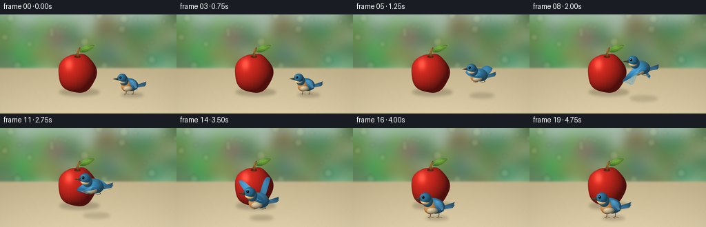
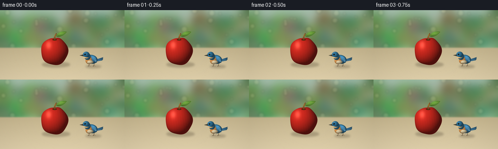

CODING AGENTS AS PIXEL WORLD MODELS
traex/GPT-6.1-Sol · dynamic_spatial_relationship_0040
点击播放 · 原生 RGB 像素
逐轮保存的候选
回放视频、检查图与代码变化。
每份候选均可单独播放。实际图片检查记录在下方工具轨迹中。
候选 01播放与检查图
点击播放 · 原生 RGB 像素


展开代码变化
--- 上一保存版本
+++ 本次保存版本
@@ -0,0 +1,212 @@
+from pathlib import Path
+import math
+import numpy as np
+from PIL import Image, ImageDraw, ImageFilter
+import artifact_io
+
+ROOT=Path(__file__).resolve().parent
+W,H,S=256,144,4
+SW,SH=W*S,H*S
+rng=np.random.default_rng(20)
+
+def xy(points): return [(int(x*S),int(y*S)) for x,y in points]
+def bez(points,n=40):
+ p=np.array(points,float); t=np.linspace(0,1,n)[:,None]
+ return ((1-t)**3*p[0]+3*(1-t)**2*t*p[1]+3*(1-t)*t*t*p[2]+t**3*p[3]).tolist()
+def path(parts):
+ out=[]
+ for p in parts: out+=bez(p)
+ return out
+
+def poly(im,pts,col): ImageDraw.Draw(im).polygon(xy(pts),fill=col)
+def line(im,pts,col,width=1): ImageDraw.Draw(im).line(xy(pts),fill=col,width=max(1,int(width*S)),joint='curve')
+def ellipse(im,b,col): ImageDraw.Draw(im).ellipse(tuple(int(v*S) for v in b),fill=col)
+
+def shaded(im,pts,base,highlight=(0.32,0.28),amount=0.45):
+ m=Image.new('L',(SW,SH)); ImageDraw.Draw(m).polygon(xy(pts),fill=255)
+ box=m.getbbox()
+ if not box:return
+ x0,y0,x1,y1=box
+ yy,xx=np.mgrid[y0:y1,x0:x1]; ux=(xx-x0)/(x1-x0); uy=(yy-y0)/(y1-y0)
+ g=np.exp(-(((ux-highlight[0])/.55)**2+((uy-highlight[1])/.6)**2))*amount
+ dim=.72-.09*uy
+ base=np.array(base)[None,None,:]
+ col=np.clip(base*(dim[...,None]+g[...,None])+g[...,None]*13,0,255).astype('uint8')
+ im.paste(Image.fromarray(col),(x0,y0),m.crop(box))
+
+def ellipsoid(im,cx,cy,rx,ry,base,angle=0):
+ # Smooth diffuse and specular light across an anatomical ellipsoid.
+ x0=max(0,int((cx-max(rx,ry)-2)*S)); x1=min(SW,int((cx+max(rx,ry)+2)*S))
+ y0=max(0,int((cy-max(rx,ry)-2)*S)); y1=min(SH,int((cy+max(rx,ry)+2)*S))
+ yy,xx=np.mgrid[y0:y1,x0:x1]; x=(xx/S-cx); y=(yy/S-cy)
+ co,si=math.cos(angle),math.sin(angle); u=(co*x+si*y)/rx; v=(-si*x+co*y)/ry
+ q=u*u+v*v; alpha=np.clip((1-q)*S*min(rx,ry)*.6,0,1)
+ z=np.sqrt(np.maximum(0,1-q)); shade=.50+.49*np.maximum(0,-.48*u-.50*v+.74*z)
+ spec=np.exp(-((u+.36)**2+(v+.42)**2)/.045)*.07
+ arr=np.clip(np.array(base)[None,None,:]*shade[...,None]+spec[...,None]*140,0,255).astype('uint8')
+ im.paste(Image.fromarray(arr),(x0,y0),Image.fromarray((alpha*255).astype('uint8')))
+
+# Fixed camera: a softly defocused sunlit garden, with a pale sandstone surface.
+yy,xx=np.mgrid[0:SH,0:SW]; Y=yy/S; X=xx/S
+bg=np.zeros((SH,SW,3),float)
+t=np.clip(Y/92,0,1)[...,None]
+bg[:]=np.array([167,194,177])*(1-t)+np.array([213,222,184])*t
+back=Image.fromarray(bg.astype('uint8'))
+d=ImageDraw.Draw(back)
+for i in range(125):
+ x=rng.uniform(-30,286); y=rng.uniform(12,89); r=rng.uniform(5,21)
+ col=(int(rng.uniform(71,141)),int(rng.uniform(112,172)),int(rng.uniform(70,117)))
+ d.ellipse(((x-r)*S,(y-r*.7)*S,(x+r)*S,(y+r*.7)*S),fill=col)
+back=back.filter(ImageFilter.GaussianBlur(9*S))
+bokeh=Image.new('RGBA',(SW,SH))
+for i in range(24):
+ x=rng.uniform(0,256); y=rng.uniform(0,76); r=rng.uniform(1.5,7)
+ ImageDraw.Draw(bokeh).ellipse(((x-r)*S,(y-r)*S,(x+r)*S,(y+r)*S),fill=(255,246,193,35))
+bokeh=bokeh.filter(ImageFilter.GaussianBlur(2*S));back=Image.alpha_composite(back.convert('RGBA'),bokeh).convert('RGB')
+# Foreground planar ground, slight warm photographic texture.
+arr=np.asarray(back).copy().astype(float)
+frac=np.clip((Y-78)/66,0,1)
+noise=rng.normal(0,.65,(SH,SW))
+for k in range(3):
+ ground=([197,181,142][k]*(1-frac)+[224,208,171][k]*frac)+noise
+ arr[:,:,k]=np.where(Y>=78,ground,arr[:,:,k])
+back=Image.fromarray(np.uint8(np.clip(arr,0,255)))
+# Soft horizon avoids a hard artificial stripe.
+bl=back.filter(ImageFilter.GaussianBlur(1.2*S))
+back.paste(bl.crop((0,75*S,SW,82*S)),(0,75*S))
+texture=Image.new('RGBA',(SW,SH))
+for i in range(700):
+ x=rng.uniform(0,256); y=rng.uniform(84,144); a=rng.integers(8,29); r=rng.uniform(.08,.45)*(y/144)
+ ImageDraw.Draw(texture).ellipse(((x-r)*S,(y-r*.45)*S,(x+r)*S,(y+r*.45)*S),fill=(115,101,78,int(a)))
+back=Image.alpha_composite(back.convert('RGBA'),texture).convert('RGB')
+
+# Shadows retain depth as the bird moves toward the viewer.
+def shadow(im,x,y,rx,ry,alpha):
+ lay=Image.new('RGBA',(SW,SH)); ellipse(lay,(x-rx,y-ry,x+rx,y+ry),(64,53,35,alpha))
+ lay=lay.filter(ImageFilter.GaussianBlur(2.1*S));return Image.alpha_composite(im.convert('RGBA'),lay).convert('RGB')
+
+# Render an apple with lobed shoulders, warm diffuse shading, freckles and glossy highlights.
+def apple(im):
+ cx,cy=112,85
+ x0,x1,y0,y1=81*S,143*S,54*S,117*S
+ y,x=np.mgrid[y0:y1,x0:x1]; u=(x/S-cx)/28; v=(y/S-cy)/29
+ # top cleft and five subtle radial lobes evoke a real apple, not a red sphere.
+ a=np.arctan2(v,u)
+ radius=1+.027*np.cos(5*a+.5)
+ radius-=.105*np.exp(-((u/.26)**2))*np.clip(-v,0,1)**7
+ q=(u*u+v*v)/(radius*radius)
+ mask=np.clip((1-q)*28*S*.55,0,1)
+ z=np.sqrt(np.maximum(0,1-q)); shade=.29+.75*np.maximum(0,-.46*u-.43*v+.75*z)
+ stripe=(np.sin(u*50+v*9)+np.sin(u*93-v*5))*.8
+ mottling=2*np.sin(u*21+v*29)*np.cos(v*33-u*14)
+ col=np.empty((y1-y0,x1-x0,3))
+ col[:,:,0]=193*shade+22+stripe+mottling
+ col[:,:,1]=37*shade+7+stripe*.55+mottling*.4
+ col[:,:,2]=27*shade+6+mottling*.4
+ shine=np.exp(-(((u+.43)/.20)**2+((v+.44)/.28)**2))*55
+ col+=shine[...,None]*np.array([1,.88,.76])
+ # small yellow-red speckles on the fruit skin
+ freckles=(np.sin(x*1.731+y*.89)*np.sin(y*2.651-x*.92)>.985)&(z>.2)
+ col[freckles]+=np.array([12,12,5])
+ im.paste(Image.fromarray(np.uint8(np.clip(col,0,255))),(x0,y0),Image.fromarray(np.uint8(mask*255)))
+ ellipse(im,(107.5,59.5,117,63.1),(89,35,14))
+ st=path([[(111,62),(110,57),(112,52),(115,48)],[(115,48),(117,47),(117,49),(115,52)],[(115,52),(114,55),(114,59),(114,62)]])
+ shaded(im,st,(115,74,30),(.3,.2),.7)
+ line(im,[(113,60),(113,55),(115,50)],(154,114,59),.7)
+ leaf=path([[(114,54),(122,42),(133,44),(137,45)],[(137,45),(131,54),(122,57),(114,54)]])
+ shaded(im,leaf,(79,125,44),(.4,.3),.62)
+ line(im,bez([(115,54),(122,49),(128,48),(135,46)]),(164,174,78),.65)
+ for i in range(4):
+ x=119+i*3.5;y=52-i*1.4
+ line(im,[(x,y),(x+1,y-3)],(103,143,52),.35)
+
+# Anatomical bluebird; consistent left-facing head, separate flapping wings and tail.
+def bird(im,cx,cy,sc,flight,phase):
+ def tr(p):return [(cx+x*sc,cy+y*sc) for x,y in p]
+ def sh(p,c,hi=(.3,.25),am=.5):shaded(im,tr(p),c,hi,am)
+ def ln(p,c,w=.6):line(im,tr(p),c,w*sc)
+ def el(x,y,rx,ry,c,angle=0):ellipsoid(im,cx+x*sc,cy+y*sc,rx*sc,ry*sc,c,angle)
+ # Tail fans subtly apart, pointing up and right.
+ for j in range(3):
+ sh([(10,2+j*1.5),(29,-4+j*2),(26,0+j*2),(10,7)],(39+j*5,81+j*8,109+j*9))
+ ln([(13,4+j),(25,-1+j*2)],(94,140,161),.5)
+ wing_amount=math.sin(phase)
+ if flight:
+ # Far wing unfolds behind the shoulders.
+ tipy=-10-25*wing_amount; tipx=12+8*(1-abs(wing_amount))
+ wing=path([[(-1,-4),(4,-12),(tipx-6,tipy-9),(tipx+3,tipy)],[(tipx+3,tipy),(tipx,tipy+10),(9,6),(-1,3)]])
+ sh(wing,(39,95,130),(.5,.35),.7)
+ for j in range(5):ln([(3+j*.8,-2),(tipx-3+j*1.25,tipy+1+j*.9)],(68,127,156),.6)
+ # Fine legs, bent and tucked while in flight; visible toes when perched.
+ for dx in [-5,7]:
+ if flight:
+ ln([(dx,9),(dx+3,13),(dx-2,14)],(83,69,51),1)
+ ln([(dx-2,14),(dx-5,13.3)],(67,58,45),.7)
+ else:
+ ln([(dx,9),(dx-1,17),(dx-4,18)],(89,70,48),1)
+ ln([(dx-1,17),(dx+4,18)],(89,70,48),.8)
+ ln([(dx-1,17),(dx-2,19)],(89,70,48),.7)
+ el(0,1,15,11.2,(61,127,160),.2)
+ el(-5,4,10,9.0,(224,153,81),-.22)
+ el(-3,8,8.1,4.5,(224,207,166),-.05)
+ if not flight:
+ wing=path([[(0,-7),(9,-7),(16,0),(13,9)],[(13,9),(6,10),(-1,4),(0,-7)]])
+ sh(wing,(49,108,146),(.3,.12),.65)
+ for j in range(5):
+ ln(bez([(2+j*1.7,-3),(5+j*1.4,0),(8+j*.8,4),(10+j*.65,7-j*.2)]),(85,144,175),.7)
+ else:
+ # Near wing contains distinct feather tips along a continuously flapping fan.
+ tipx=-18-7*abs(wing_amount); tipy=-4-27*wing_amount
+ p=path([[(2,-5),(-5,-9),(tipx+1,tipy-7),(tipx-5,tipy)],[(tipx-5,tipy),(tipx-4,tipy+6),(-6,9),(7,5)],[(7,5),(9,2),(6,-2),(2,-5)]])
+ sh(p,(46,116,160),(.4,.2),.68)
+ for j in range(7):
+ ln(bez([(3,2),(-7,0),(tipx+6+j*1.7,tipy+6+j*.6),(tipx-3+j*1.8,tipy+1+j*.75)]),(90,159,191),.72)
+ # Neck and round head in front of the wing root.
+ el(-10,-6,8,9,(68,132,164),-.18)
+ el(-13,-10,8.5,8.0,(53,125,166),-.15)
+ # Small cream cheek / tawny throat patch.
+ cheek=path([[(-20,-6),(-19,-1),(-11,1),(-7,-4)],[(-7,-4),(-12,-3),(-15,-4),(-20,-6)]])
+ sh(cheek,(225,178,114),(.3,.3),.45)
+ # Short black tapered beak.
+ sh([(-20,-11),(-29,-8.5),(-20,-6.5)],(62,61,49),(.6,.2),.52)
+ ln([(-27,-8.4),(-20,-8.2)],(40,40,35),.45)
+ el(-16,-11.2,2.1,2.3,(19,28,30))
+ el(-16.6,-12,.65,.65,(245,247,225))
+ ln([(-19,-14.4),(-16,-15),(-13,-14.4)],(135,185,210),.6)
+ # Delicate breast feather accents, low-contrast rather than a graphic outline.
+ for j in range(5):
+ ln([(-10+j*2.7,7.7),(-9+j*2.7,9.0)],(199,173,126),.4)
+
+frames=[]
+for f in range(20):
+ if f<4:
+ cx,cy,sc=188,101,.84
+ flight=False;phase=0
+ cy+=.2*math.sin(f*1.4)
+ elif f<=15:
+ t=(f-3)/12
+ # Starts to the right, arcs through open air, then descends in FRONT of the apple.
+ sm=t*t*(3-2*t)
+ cx=188-70*sm
+ cy=101+11*sm-30*math.sin(math.pi*t)
+ sc=.84+.18*sm
+ flight=f<15
+ phase=(f-4)*2.55+.6
+ else:
+ cx,cy,sc=118,112+.15*math.sin(f*1.2),1.02
+ flight=False;phase=0
+ im=back.copy()
+ im=shadow(im,115,113,29,5.7,70)
+ ground_y=117+14*max(0,min(1,(188-cx)/70))
+ lift=max(0,ground_y-(cy+sc*18))
+ im=shadow(im,cx+4,ground_y,16+lift*.13,3.3+lift*.035,int(65-lift*.7))
+ apple(im)
+ bird(im,cx,cy,sc,flight,phase)
+ # A gentle lens vignette provides a natural focus without changing the scene.
+ ar=np.asarray(im).astype(float)
+ vign=1-.075*((X-128)/165)**2-.035*((Y-75)/115)**2
+ ar=np.clip(ar*vign[...,None],0,255).astype('uint8')
+ im=Image.fromarray(ar).resize((W,H),Image.Resampling.LANCZOS)
+ frames.append(np.asarray(im))
+artifact_io.save(np.stack(frames),ROOT)
+print('Saved 20 RGB frames, 256x144 at 4 fps.')
可观测工具轨迹
实际执行的命令与返回图片。
命令 1exit 0
/bin/bash -lc 'ls -la && cat prompt.txt && cat GENERATION_RULES.md && cat task_spec.json'
命令 2exit 0
/bin/bash -lc 'cat artifact_io.py'
命令 3exit 0
/bin/bash -lc "cat > generate.py <<'PY'
from pathlib import Path
import math
import numpy as np
from PIL import Image, ImageDraw, ImageFilter
import artifact_io
ROOT=Path(__file__).resolve().parent
W,H,S=256,144,4
SW,SH=W*S,H*S
rng=np.random.default_rng(20)
def xy(points): return [(int(x*S),int(y*S)) for x,y in points]
def bez(points,n=40):
p=np.array(points,float); t=np.linspace(0,1,n)[:,None]
return ((1-t)**3*p[0]+3*(1-t)**2*t*p[1]+3*(1-t)*t*t*p[2]+t**3*p[3]).tolist()
def path(parts):
out=[]
for p in parts: out+=bez(p)
return out
def poly(im,pts,col): ImageDraw.Draw(im).polygon(xy(pts),fill=col)
def line(im,pts,col,width=1): ImageDraw.Draw(im).line(xy(pts),fill=col,width=max(1,int(width*S)),joint='curve')
def ellipse(im,b,col): ImageDraw.Draw(im).ellipse(tuple(int(v*S) for v in b),fill=col)
def shaded(im,pts,base,highlight=(0.32,0.28),amount=0.45):
m=Image.new('L',(SW,SH)); ImageDraw.Draw(m).polygon(xy(pts),fill=255)
box=m.getbbox()
if not box:return
x0,y0,x1,y1=box
yy,xx=np.mgrid[y0:y1,x0:x1]; ux=(xx-x0)/(x1-x0); uy=(yy-y0)/(y1-y0)
g=np.exp(-(((ux-highlight[0])/.55)**2+((uy-highlight[1])/.6)**2))*amount
dim=.72-.09*uy
base=np.array(base)[None,None,:]
col=np.clip(base*(dim[...,None]+g[...,None])+g[...,None]*13,0,255).astype('uint8')
im.paste(Image.fromarray(col),(x0,y0),m.crop(box))
def ellipsoid(im,cx,cy,rx,ry,base,angle=0):
# Smooth diffuse and specular light across an anatomical ellipsoid.
x0=max(0,int((cx-max(rx,ry)-2)*S)); x1=min(SW,int((cx+max(rx,ry)+2)*S))
y0=max(0,int((cy-max(rx,ry)-2)*S)); y1=min(SH,int((cy+max(rx,ry)+2)*S))
yy,xx=np.mgrid[y0:y1,x0:x1]; x=(xx/S-cx); y=(yy/S-cy)
co,si=math.cos(angle),math.sin(angle); u=(co*x+si*y)/rx; v=(-si*x+co*y)/ry
q=u*u+v*v; alpha=np.clip((1-q)*S*min(rx,ry)*.6,0,1)
z=np.sqrt(np.maximum(0,1-q)); shade=.50+.49*np.maximum(0,-.48*u-.50*v+.74*z)
spec=np.exp(-((u+.36)**2+(v+.42)**2)/.045)*.07
arr=np.clip(np.array(base)[None,None,:]*shade[...,None]+spec[...,None]*140,0,255).astype('uint8')
im.paste(Image.fromarray(arr),(x0,y0),Image.fromarray((alpha*255).astype('uint8')))
# Fixed camera: a softly defocused sunlit garden, with a pale sandstone surface.
yy,xx=np.mgrid[0:SH,0:SW]; Y=yy/S; X=xx/S
bg=np.zeros((SH,SW,3),float)
t=np.clip(Y/92,0,1)[...,None]
bg[:]=np.array([167,194,177])*(1-t)+np.array([213,222,184])*t
back=Image.fromarray(bg.astype('uint8'))
d=ImageDraw.Draw(back)
for i in range(125):
x=rng.uniform(-30,286); y=rng.uniform(12,89); r=rng.uniform(5,21)
col=(int(rng.uniform(71,141)),int(rng.uniform(112,172)),int(rng.uniform(70,117)))
d.ellipse(((x-r)*S,(y-r*.7)*S,(x+r)*S,(y+r*.7)*S),fill=col)
back=back.filter(ImageFilter.GaussianBlur(9*S))
bokeh=Image.new('RGBA',(SW,SH))
for i in range(24):
x=rng.uniform(0,256); y=rng.uniform(0,76); r=rng.uniform(1.5,7)
ImageDraw.Draw(bokeh).ellipse(((x-r)*S,(y-r)*S,(x+r)*S,(y+r)*S),fill=(255,246,193,35))
bokeh=bokeh.filter(ImageFilter.GaussianBlur(2*S));back=Image.alpha_composite(back.convert('RGBA'),bokeh).convert('RGB')
# Foreground planar ground, slight warm photographic texture.
arr=np.asarray(back).copy().astype(float)
frac=np.clip((Y-78)/66,0,1)
noise=rng.normal(0,.65,(SH,SW))
for k in range(3):
ground=([197,181,142][k]*(1-frac)+[224,208,171][k]*frac)+noise
arr[:,:,k]=np.where(Y>=78,ground,arr[:,:,k])
back=Image.fromarray(np.uint8(np.clip(arr,0,255)))
# Soft horizon avoids a hard artificial stripe.
bl=back.filter(ImageFilter.GaussianBlur(1.2*S))
back.paste(bl.crop((0,75*S,SW,82*S)),(0,75*S))
texture=Image.new('RGBA',(SW,SH))
for i in range(700):
x=rng.uniform(0,256); y=rng.uniform(84,144); a=rng.integers(8,29); r=rng.uniform(.08,.45)*(y/144)
ImageDraw.Draw(texture).ellipse(((x-r)*S,(y-r*.45)*S,(x+r)*S,(y+r*.45)*S),fill=(115,101,78,int(a)))
back=Image.alpha_composite(back.convert('RGBA'),texture).convert('RGB')
# Shadows retain depth as the bird moves toward the viewer.
def shadow(im,x,y,rx,ry,alpha):
lay=Image.new('RGBA',(SW,SH)); ellipse(lay,(x-rx,y-ry,x+rx,y+ry),(64,53,35,alpha))
lay=lay.filter(ImageFilter.GaussianBlur(2.1*S));return Image.alpha_composite(im.convert('RGBA'),lay).convert('RGB')
# Render an apple with lobed shoulders, warm diffuse shading, freckles and glossy highlights.
def apple(im):
cx,cy=112,85
x0,x1,y0,y1=81*S,143*S,54*S,117*S
y,x=np.mgrid[y0:y1,x0:x1]; u=(x/S-cx)/28; v=(y/S-cy)/29
# top cleft and five subtle radial lobes evoke a real apple, not a red sphere.
a=np.arctan2(v,u)
radius=1+.027*np.cos(5*a+.5)
radius-=.105*np.exp(-((u/.26)**2))*np.clip(-v,0,1)**7
q=(u*u+v*v)/(radius*radius)
mask=np.clip((1-q)*28*S*.55,0,1)
z=np.sqrt(np.maximum(0,1-q)); shade=.29+.75*np.maximum(0,-.46*u-.43*v+.75*z)
stripe=(np.sin(u*50+v*9)+np.sin(u*93-v*5))*.8
mottling=2*np.sin(u*21+v*29)*np.cos(v*33-u*14)
col=np.empty((y1-y0,x1-x0,3))
col[:,:,0]=193*shade+22+stripe+mottling
col[:,:,1]=37*shade+7+stripe*.55+mottling*.4
col[:,:,2]=27*shade+6+mottling*.4
shine=np.exp(-(((u+.43)/.20)**2+((v+.44)/.28)**2))*55
col+=shine[...,None]*np.array([1,.88,.76])
# small yellow-red speckles on the fruit skin
freckles=(np.sin(x*1.731+y*.89)*np.sin(y*2.651-x*.92)>.985)&(z>.2)
col[freckles]+=np.array([12,12,5])
im.paste(Image.fromarray(np.uint8(np.clip(col,0,255))),(x0,y0),Image.fromarray(np.uint8(mask*255)))
ellipse(im,(107.5,59.5,117,63.1),(89,35,14))
st=path([[(111,62),(110,57),(112,52),(115,48)],[(115,48),(117,47),(117,49),(115,52)],[(115,52),(114,55),(114,59),(114,62)]])
shaded(im,st,(115,74,30),(.3,.2),.7)
line(im,[(113,60),(113,55),(115,50)],(154,114,59),.7)
leaf=path([[(114,54),(122,42),(133,44),(137,45)],[(137,45),(131,54),(122,57),(114,54)]])
shaded(im,leaf,(79,125,44),(.4,.3),.62)
line(im,bez([(115,54),(122,49),(128,48),(135,46)]),(164,174,78),.65)
for i in range(4):
x=119+i*3.5;y=52-i*1.4
line(im,[(x,y),(x+1,y-3)],(103,143,52),.35)
# Anatomical bluebird; consistent left-facing head, separate flapping wings and tail.
def bird(im,cx,cy,sc,flight,phase):
def tr(p):return [(cx+x*sc,cy+y*sc) for x,y in p]
def sh(p,c,hi=(.3,.25),am=.5):shaded(im,tr(p),c,hi,am)
def ln(p,c,w=.6):line(im,tr(p),c,w*sc)
def el(x,y,rx,ry,c,angle=0):ellipsoid(im,cx+x*sc,cy+y*sc,rx*sc,ry*sc,c,angle)
# Tail fans subtly apart, pointing up and right.
for j in range(3):
sh([(10,2+j*1.5),(29,-4+j*2),(26,0+j*2),(10,7)],(39+j*5,81+j*8,109+j*9))
ln([(13,4+j),(25,-1+j*2)],(94,140,161),.5)
wing_amount=math.sin(phase)
if flight:
# Far wing unfolds behind the shoulders.
tipy=-10-25*wing_amount; tipx=12+8*(1-abs(wing_amount))
wing=path([[(-1,-4),(4,-12),(tipx-6,tipy-9),(tipx+3,tipy)],[(tipx+3,tipy),(tipx,tipy+10),(9,6),(-1,3)]])
sh(wing,(39,95,130),(.5,.35),.7)
for j in range(5):ln([(3+j*.8,-2),(tipx-3+j*1.25,tipy+1+j*.9)],(68,127,156),.6)
# Fine legs, bent and tucked while in flight; visible toes when perched.
for dx in [-5,7]:
if flight:
ln([(dx,9),(dx+3,13),(dx-2,14)],(83,69,51),1)
ln([(dx-2,14),(dx-5,13.3)],(67,58,45),.7)
else:
ln([(dx,9),(dx-1,17),(dx-4,18)],(89,70,48),1)
ln([(dx-1,17),(dx+4,18)],(89,70,48),.8)
ln([(dx-1,17),(dx-2,19)],(89,70,48),.7)
el(0,1,15,11.2,(61,127,160),.2)
el(-5,4,10,9.0,(224,153,81),-.22)
el(-3,8,8.1,4.5,(224,207,166),-.05)
if not flight:
wing=path([[(0,-7),(9,-7),(16,0),(13,9)],[(13,9),(6,10),(-1,4),(0,-7)]])
sh(wing,(49,108,146),(.3,.12),.65)
for j in range(5):
ln(bez([(2+j*1.7,-3),(5+j*1.4,0),(8+j*.8,4),(10+j*.65,7-j*.2)]),(85,144,175),.7)
else:
# Near wing contains distinct feather tips along a continuously flapping fan.
tipx=-18-7*abs(wing_amount); tipy=-4-27*wing_amount
p=path([[(2,-5),(-5,-9),(tipx+1,tipy-7),(tipx-5,tipy)],[(tipx-5,tipy),(tipx-4,tipy+6),(-6,9),(7,5)],[(7,5),(9,2),(6,-2),(2,-5)]])
sh(p,(46,116,160),(.4,.2),.68)
for j in range(7):
ln(bez([(3,2),(-7,0),(tipx+6+j*1.7,tipy+6+j*.6),(tipx-3+j*1.8,tipy+1+j*.75)]),(90,159,191),.72)
# Neck and round head in front of the wing root.
el(-10,-6,8,9,(68,132,164),-.18)
el(-13,-10,8.5,8.0,(53,125,166),-.15)
# Small cream cheek / tawny throat patch.
cheek=path([[(-20,-6),(-19,-1),(-11,1),(-7,-4)],[(-7,-4),(-12,-3),(-15,-4),(-20,-6)]])
sh(cheek,(225,178,114),(.3,.3),.45)
# Short black tapered beak.
sh([(-20,-11),(-29,-8.5),(-20,-6.5)],(62,61,49),(.6,.2),.52)
ln([(-27,-8.4),(-20,-8.2)],(40,40,35),.45)
el(-16,-11.2,2.1,2.3,(19,28,30))
el(-16.6,-12,.65,.65,(245,247,225))
ln([(-19,-14.4),(-16,-15),(-13,-14.4)],(135,185,210),.6)
# Delicate breast feather accents, low-contrast rather than a graphic outline.
for j in range(5):
ln([(-10+j*2.7,7.7),(-9+j*2.7,9.0)],(199,173,126),.4)
frames=[]
for f in range(20):
if f<4:
cx,cy,sc=188,101,.84
flight=False;phase=0
cy+=.2*math.sin(f*1.4)
elif f<=15:
t=(f-3)/12
# Starts to the right, arcs through open air, then descends in FRONT of the apple.
sm=t*t*(3-2*t)
cx=188-70*sm
cy=101+11*sm-30*math.sin(math.pi*t)
sc=.84+.18*sm
flight=f<15
phase=(f-4)*2.55+.6
else:
cx,cy,sc=118,112+.15*math.sin(f*1.2),1.02
flight=False;phase=0
im=back.copy()
im=shadow(im,115,113,29,5.7,70)
ground_y=117+14*max(0,min(1,(188-cx)/70))
lift=max(0,ground_y-(cy+sc*18))
im=shadow(im,cx+4,ground_y,16+lift*.13,3.3+lift*.035,int(65-lift*.7))
apple(im)
bird(im,cx,cy,sc,flight,phase)
# A gentle lens vignette provides a natural focus without changing the scene.
ar=np.asarray(im).astype(float)
vign=1-.075*((X-128)/165)**2-.035*((Y-75)/115)**2
ar=np.clip(ar*vign[...,None],0,255).astype('uint8')
im=Image.fromarray(ar).resize((W,H),Image.Resampling.LANCZOS)
frames.append(np.asarray(im))
artifact_io.save(np.stack(frames),ROOT)
print('Saved 20 RGB frames, 256x144 at 4 fps.')
PY
python generate.py"命令 4exit 2
/bin/bash -lc "python - <<'PY'
from pathlib import Path
from PIL import Image
import numpy as np
p=Path('.')
a=np.load(p/'pixels.npz')['pixels']
assert a.shape==(144,256,20)
assert len(list((p/'frames').glob('*.png')))==20
assert all(Image.open(f).mode=='RGB' and Image.open(f).size==(256,144) for f in (p/'frames').glob('*.png'))
print('Verified frame count, RGB format, dimensions, and packed video artifact.')
PY
if command -v ffmpeg >/dev/null 2>&1; then ffmpeg -y -loglevel error -framerate 4 -i frames/%02d.png -c:v libx264 -crf 18 -pix_fmt yuv420p -movflags +faststart video.mp4; fi
ls -lh pixels.npz index.html video.mp4 2>/dev/null"保存候选 1 份；完成命令 4 次；可验证图片返回 0 张。原始 API 响应与完整日志保留在本地。